SNS運用
代わりにやる- アカウント設計と企画
- 台本・撮影・編集
- 投稿と週次の改善
- ショート動画が主軸
DARWIN ／ マーケティング支援事業
SNS運用・Web制作・広告から、社内で回せる体制づくりまで。
再生数ではなく、売上が動くところまでやり切ります。

課題
「何が分からないのかも分からない」状態からで構いません。
そこを整理するところから始めます。
再生数は伸びた。でもお客様が増えない
見ている数字が「再生数」で止まっていて、そこから先が設計されていない状態です。どこで離脱しているかを特定し、問い合わせまでの導線を引き直します。
ホームページを作りたいが、何から手をつければいいか分からない
作る前に決めることが多すぎて止まっている状態です。誰に何を伝えるサイトなのかを先に決めれば、あとは順番どおりに進みます。
誰に届ければいいのかが分からない
商品は良いのに、届け先が決まっていないと何をやっても薄まります。既存のお客様と数字から、狙うべき相手を絞り込みます。
そもそも、自社の売り方が整理できていない
ここが一番多いご相談です。事業の形から一緒に分析します。何を強みとして、どこで利益を取るのかを整理するところが出発点になります。
現状の数字を見せていただければ、どれに当てはまるかその場でお伝えします。
オンラインで60分ほど。その場で「どこが詰まっているか」をお伝えします。売り込みはしません。できること
企画から撮影、サイト、広告、社内の体制づくりまで、集客まわりはひと通り手を動かします。 ただ、頼み方としては3つに整理できます。「代わりにやる」「作る」「できるようにする」。 1つだけでも、つないでも構いません。
写真はイメージです。
どれが自社に効くか分からない場合も、診断でお伝えします。
オンラインで60分ほど。その場で「どこが詰まっているか」をお伝えします。売り込みはしません。進め方
3つのどれを選んでも、進め方は同じです。診断だけで終わっても構いません。
事業構造・KGI・既存アカウントを棚卸しし、どこで詰まっているかを特定します。ここまでは無料です。
KGIから逆算したKPIツリーと、コンテンツ・導線の設計図をつくります。毎週どの数字を見るかも、ここで決めます。
企画・撮影・編集・投稿、またはサイト制作と広告出稿。運用体制ごと立ち上げて初速を取りにいきます。
週次で数値を読み、伸びた理由を型にして次へ。ここで残した型が、そのまま内製化の資産になります。
まずは診断だけ、というご依頼が一番多いです。
オンラインで60分ほど。その場で「どこが詰まっているか」をお伝えします。売り込みはしません。なぜ効くのか
やり方を更新し続ける仕組み。
市場が変わり続ける以上、勝ち筋も変わり続けます。 だから納品するのは「今回うまくいったやり方」ではありません。 社名の由来もここにあります。
業種も商材も詰まる場所も、同じものは1つもありません。積み上げた型を事業ごとに組み替え、その課題にだけ効く打ち手に変えます。
1本のバズは運でも起きます。設計するのは、伸びた理由を分解して次に再現する仕組みのほうです。
再生数の先にあるのは売上と利益です。認知・興味・比較・行動のどこで落ちているかを特定し、数字が動く場所まで運びます。
この考え方が自社に合うかどうかも、診断の場でお話しします。
オンラインで60分ほど。その場で「どこが詰まっているか」をお伝えします。売り込みはしません。料金
いきなり契約の話はしません。まず現状を見て、何をすべきかをお伝えするところまでが無料です。
無料
オンラインで60分ほど。相談だけで終わっても構いません。
その先の設計・実装の費用は、内容と体制によって変わります。 診断のあとに、必要な範囲だけをお見積りします。
金額の話をする前に、まず現状を見せてください。
オンラインで60分ほど。その場で「どこが詰まっているか」をお伝えします。売り込みはしません。よくある質問
はい。アカウント設計から立ち上げまでご一緒します。まず事業構造とKGIの棚卸しから始めます。
そこが本題です。KGIから逆算したKPIツリーを引き、問い合わせや購入までの導線を設計・改善します。
内製化支援がそれにあたります。運用体制ごと立ち上げ、手順を型として社内に残す形で進めます。引き継いで自走できる状態までが範囲です。
大丈夫です。Web制作・広告として、制作から広告運用、LINEの受け皿づくりまで対応します。SNSとセットにする必要はありません。
構いません。実際、診断だけで終わるご相談も多いです。その場合も、何をすべきかはお伝えします。
お問い合わせ
現状のアカウントと事業の数字を見せていただければ、詰まっている場所と最初に打つべき手をその場でお伝えします。 相談だけでも構いません。